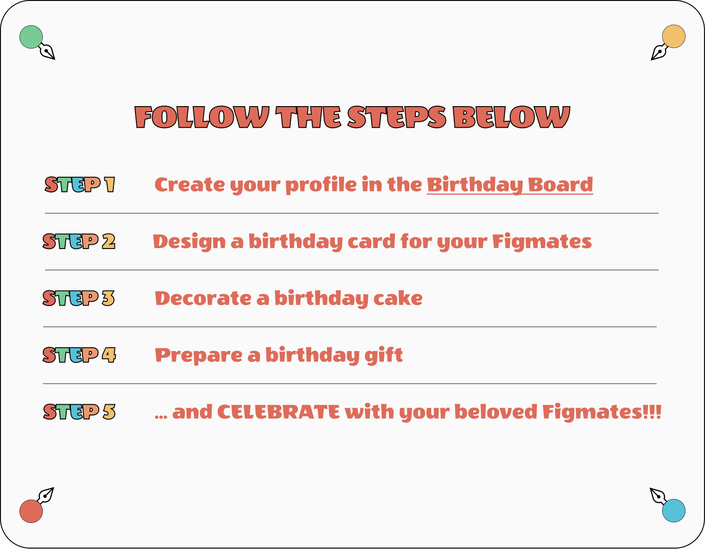
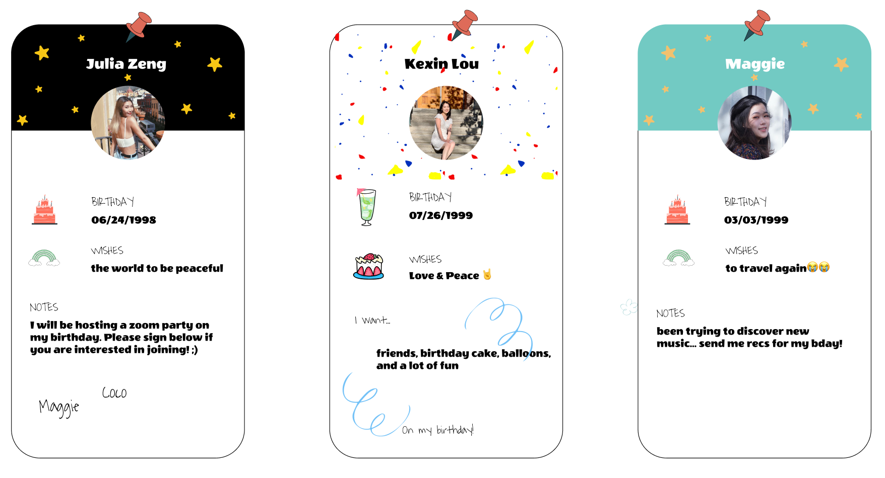
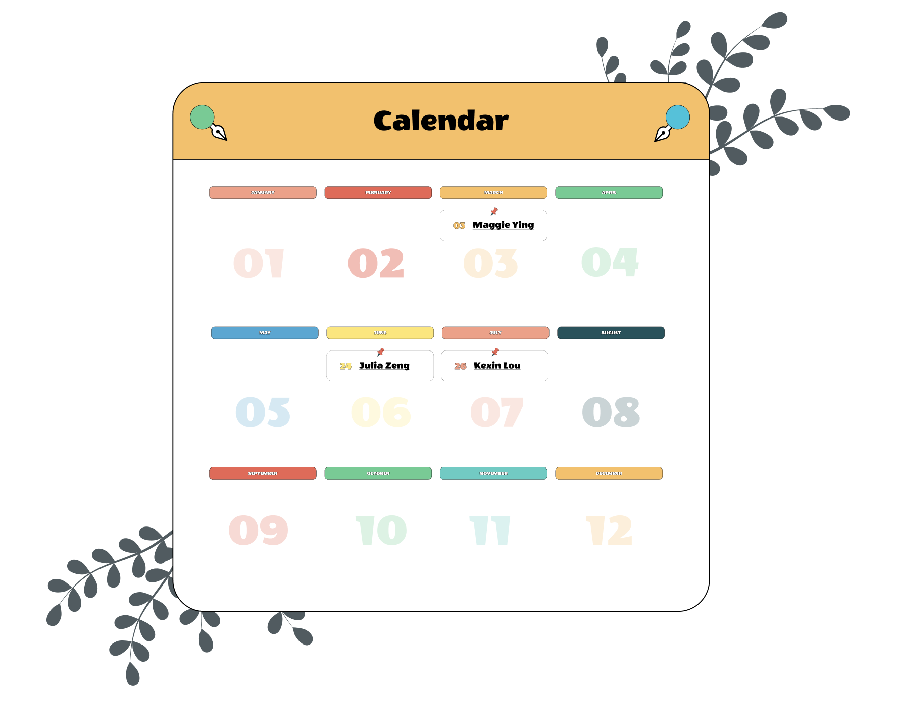

While we are living in a physically-distancing world, we can bring people’s hearts together celebrating birthdays of loved ones at virtual gatherings. Families, friend groups, or teams at work can download this Figma Birthday file to get creative and have a fun time e-celebrating birthdays!
guide to Figma birthday
First, people can create their own birthday profiles on the Birthday Board, so that they can plan ahead for celebrations. Following the links on the calendar, they can then navigate to pages dedicated to individual birthday celebrations.
birthday profiles
Figma birthday calendar
On the individual celebration pages, groups of friends can have fun together by customizing the birthday cake together — what’s even better, we’ve prepared a lot of design assets using Figma components to help people get creative.
customizing the birthday cake
Friends can show their love and wishes to the celebrant in the birthday card section. There's also a versatile birthday gift section — the gifts could be anything, even package tracking numbers.
Lastly, the retro style and colorful pastel palette mimic the mood of actual parties, making people smile as soon as they open the file. Check out more details in the Figma Birthday file below!
By creating this happy space for virtual birthday gatherings, We hope to bring people together and celebrate their love to friends, family and coworkers even when they are far apart🎈.